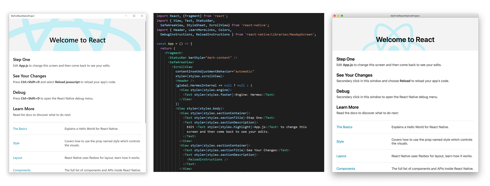

Bringing React Native to Windows devices
React Native enables you to build world-class native application experiences on multiple platforms using a consistent developer experience based on Javascript and React.
React Native for Windows brings React Native support for the Windows 10 SDK. With this, you can use Javascript to build native Windows apps for all devices supported by Windows 10 including PCs, tablets, 2-in-1s, Xbox, Mixed reality devices, etc.

You can use React Native for Windows in any way you like:
- Add Windows support to your existing React Native projects for iOS and/or Android
- Create full Windows 10 apps using React Native for Windows from scratch
- Add React Native for Windows components to your existing native Windows 10 projects
- Add React Native for Windows components to your existing Win32 projects using XamlIslands